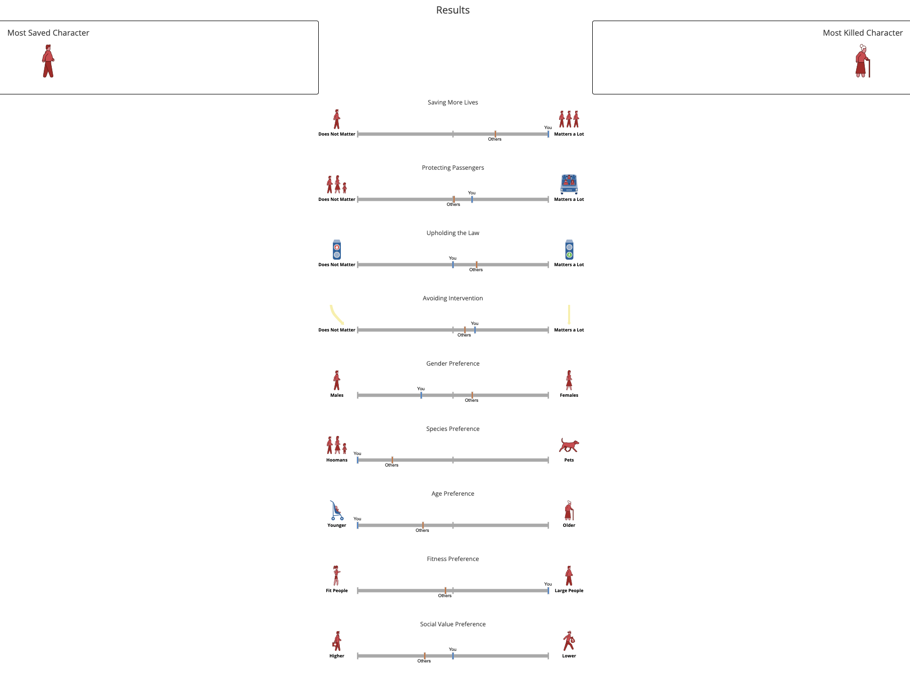
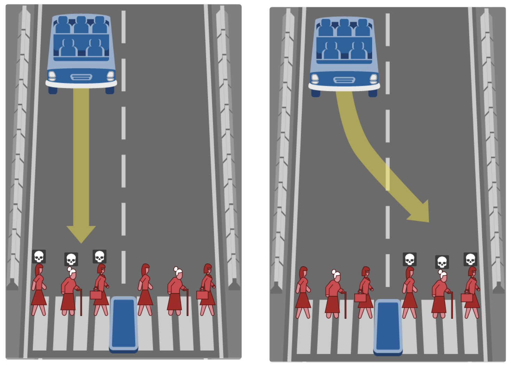

Driverless cars - morality
Oh boy, the moral machine. Here are my results, and then I'll get into justifications, comments, and other funsies.

First of all, I'd like to quickly get out of the way some issues with the sampling. The moral machine has a sample size of 13, which is simply not enough to accurately measure 9 different possible values. At best that's approximately one problem per value, at worst you get repeats or conflicts and almost no measure at all, which tends to be what the moral machine does. The moral machine thinks I have a gender preference for hitting males. I don't. I did this test once more and got that slider in the middle, it's just that the problems it gave me had more scenarios in which the men happened to be in better killing positions. The moral machine also thinks I have a social value preference. I specifically tried not to, but again, if the choice is to hit 5 homeless people who are breaking the law or 5 doctors who are following the law, it'll think I have a social value preference even if my only preference is following the law.
This whole thing frustrates me a little, because I feel it gives undue weight onto the idea of the trolly problem. Is this really what we should be spending our time on?
There are those who argue that yes, this is a vital step we need to be taking before self-driving cars can be created. This, although a good point, is not how the world works. If I'm a programmer creating a self-driving car, the most likely thing I'll do is just not program in proper reactions However, the way this test is constructed has several problems, which when combined, in my opinion, make the results rather worthless for actually helping self-driving cars.
1. There's always another option.

Ok. What do we have here? The scenario is that this hypothetical driverless car has sudden brake failure, and so can only swerve or go straight. All 6 of these people are obeying the law; the two sets of 3 are identical, there is no driver, the choice is simply to swerve or go straight. But why?
But why must I choose between these two options?
This isn't real life, and self-driving cars are not trollies. The whole point of the car is that it doesn't have tracks. Why do I need to choose who to run into? The car is driverless anyways, maybe swerving into the conveniently placed concrete barriers on either side of the road would result in a better outcome - one that hurt the car, but saved all 6 people?
I'd rather not kill people if I don't have to, and I don't think the moral machine does an effective job of giving me the choice between all the possible options. Trolly problems are simply not the right framework to view this through.
2. If self driving cars were standard we would live in a nightmare world.
One option for the development of self-driving cars is full efficiency (the type that CGP grey wants) where we remove all the things in a road that make it human. No more stop signs, or lighted intersections, because self-driving cars can communicate instantly with each other and could avoid all crashes. This would be horrible, because how would people cross the streets? Would we put in overpasses for every time someone wanted to get over the mass of roiling transport metal? Would we widen roads so that more cars can get around each other and get to their destinations faster?
Fortunately, this probably won't happen. People still drive a stick-shift in america, they'll probably still be manually driving for at least the next 50 years, and in the mean-time, infrastructure will still need to support human drivers.
30-35% of a city is already roads, semi-uninhabitable by regular humans. If self-driving / driverless cars were made popular, more people would start driving, as a barrier to entry would have been removed, which means more expansion of roads, which means less space for the actual people. Stop this! Why? Why do we continually widen roads just to widen them again? Why are various routes under construction for over 30 years? Why have we, as a nation, convinced ourselves that a car is a good, even liberating form of transport, when it twists our infrastructure and handicaps our progress? We had good solutions. We had trains, and metros, and buses, and then we done messed it up because some people in the 1950s would rather sell a product regardless of the implications, and other people would rather be fancy than take the practical approach. We've all been caught in the web of the car and there is seemingly no end in sight.
I began driving by myself recently. And besides the feeling of fear I get from being on the road, which has gradually subsided with time, the most prominent emotion I feel is loneliness. Time in the car, for me, used to be a time I spent with my family. It used to be a time for us to talk about our days, or just see each other. But now that time is just gone. My mother can't drive me places, she has places to be, and things to do, and another child to chaperone, and I
can drive, which means I'm the one to go by myself. And it's lonely. At least on the bus there's the option to talk to people. But the car is just me.
People wonder why our political system is messed up, maybe take a look at the way our society is structured. People get up, they spend up to two hours every day alone in their cars driving to and from work. During this time, there's just the individual person in their car, and all the other cars, not people, trying to get places. No wonder so many people yell at other cars, and then yell at the sports, and then yell at the politicians. It's because actually talking to a faceless lump of steel and plastic doesn't do anything.
so that's my morality